首页
上一页
287
288
289
290
291
292
292
293
294
295
296
297
下一页
末页
defanive2
无尽黑夜
14
上上一楼貌似抽了，重发：
在wiki里可以看到很多方块的附加值对于方块的影响
而其中最引人注意的是半砖的附加值
可以看到，原石半砖附加值为0
能够作为附加值转换的起始材料，而且很容易获取
可以转换成附加值为7的石英半砖！
虽然说石英在地狱里并不是很少见
但是要是用作大量建筑的话，还是很容易用完的
而我的地狱是1.3的旧地狱，要找石英得跑很远
所以说能够把原石半砖转换成石英半砖会非常的赞！
——来自 MCLive
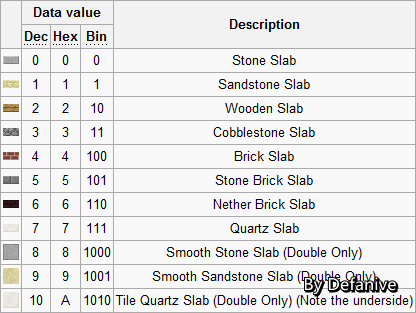
28830楼
2014-06-12 23:35
defanive2
无尽黑夜
14
最后设计出的批量转换器成品就是这样了！
右边是核心的转换器部分
人站在转换器里一直按住右键即可把半砖转换成石英半砖
而转换出来的石英半砖会被推动到左侧
左侧会被储存起来，方便批量转换完成之后的挖掘
——来自 MCLive
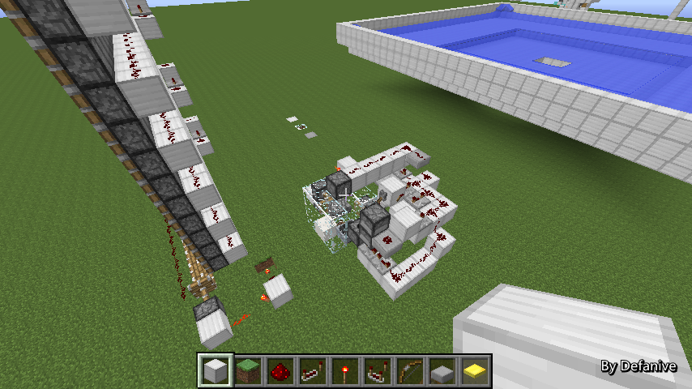
28831楼
2014-06-12 23:38
defanive2
无尽黑夜
14
接下来回到生存里，准备好材料
出发开始做啦！
——来自 MCLive
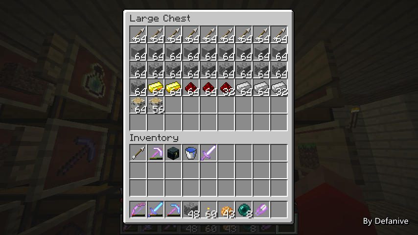
28832楼
2014-06-12 23:40
defanive2
无尽黑夜
14
首先先合成储藏部分的2组半活塞
——来自 MCLive
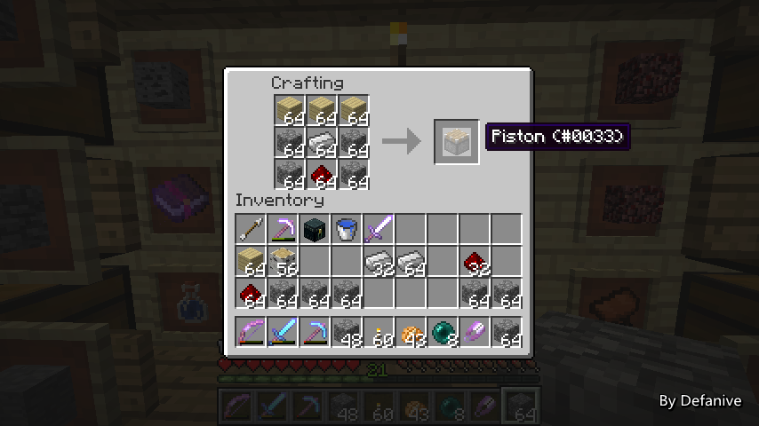
28833楼
2014-06-12 23:41
defanive2
无尽黑夜
14
打算把转换装置做在沙漠里，火箭发射站的后方
因为这个BUG迟早会被修复（貌似在1.7.9里已经被修复了）
所以说这个装置不会永久保留下来
因此会临时的做在这里使用
——来自 MCLive
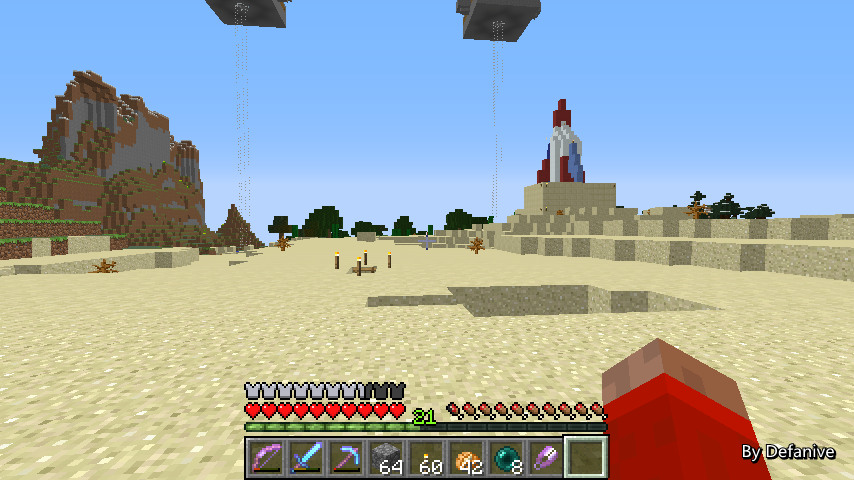
28834楼
2014-06-12 23:48
defanive2
无尽黑夜
14
首先先做一个朝上的发射器，面对玻璃
发射7只箭，因为需要把半砖改成附加值为7的石英半砖
把箭发射到玻璃里面可以防止箭在1分钟之后消失
接下来发射器就可以拆掉了
——来自 MCLive
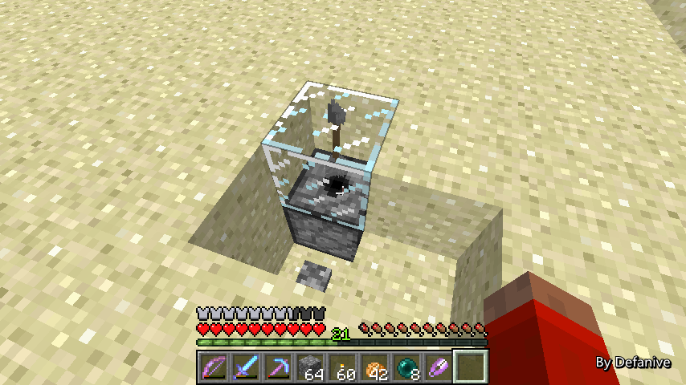
28835楼
2014-06-12 23:50
defanive2
无尽黑夜
14
接下来做出人站的舱位
这里的3个投掷器会向玩家发送半砖和金压力板
玩家只需要对准之后一直按住右键即可
PS 具体电路和设计会在下一次直播里讲
这里只是简单的展示一下工作原理
——来自 MCLive
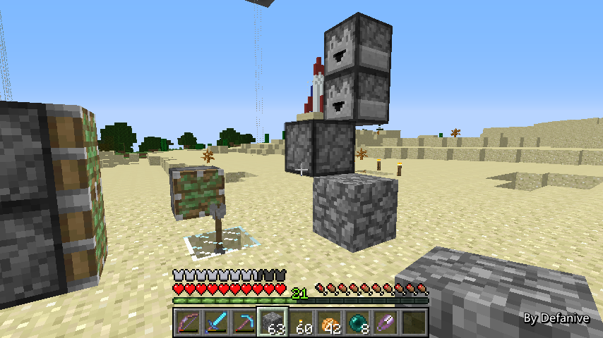
28836楼
2014-06-12 23:52
defanive2
无尽黑夜
14
玻璃的上方用发射器发射箭来自动化
后面的电路也在铺了
一个简单的0.9s周期的脉冲调成不同延时给到不同部件上
——来自 MCLive
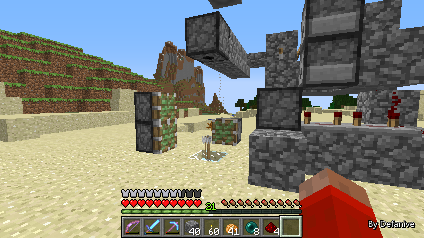
28837楼
2014-06-13 00:00
defanive2
无尽黑夜
14
合成金压力板！
——来自 MCLive
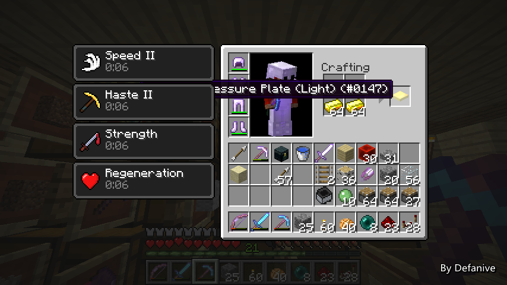
28838楼
2014-06-13 00:10
defanive2
无尽黑夜
14
电路已经布置好了！
站在这里，玩家一直按着右键
首先上面的发射器会把箭射下来，卡在楼梯方块上，记忆了坐标
然后玩家会先拿到2个半砖，在玻璃方块上放上半砖
接下来会拿到一个金压力板
然后此时活塞会把楼梯方块收回，同时玩家放下金压力板
箭击中半砖，于是就转换了半砖方块
然后右边的活塞会把转换后的石英方块推开
再后面的活塞会把发射器射出来的箭推走
就这样完成了一个半砖方块的转换
——来自 MCLive
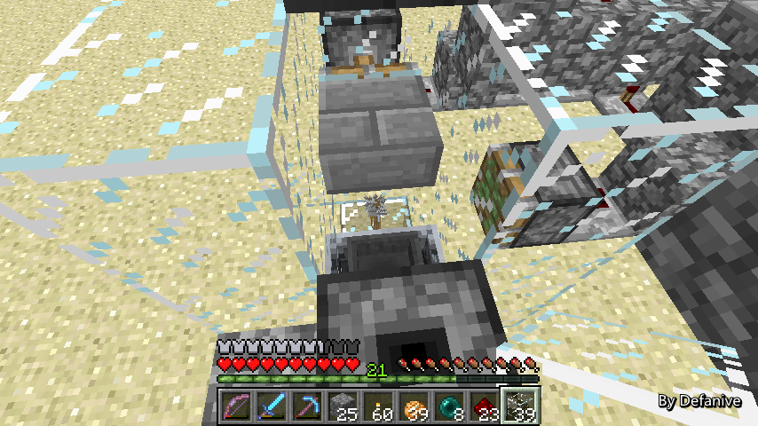
28839楼
2014-06-13 00:15
defanive2
无尽黑夜
14
在各个装置上放好需要发射的东西
可以进行测试啦！
——来自 MCLive
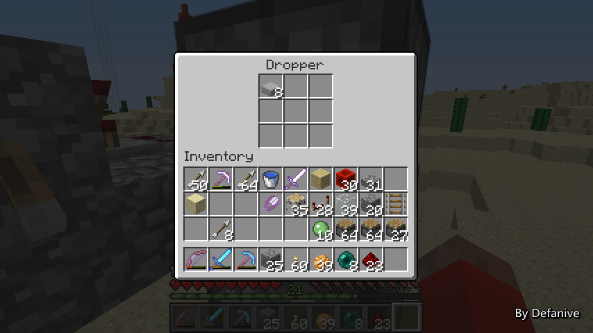
28840楼
2014-06-13 00:17
defanive2
无尽黑夜
14
一开始测试失败了，后来发现玻璃里的箭不知道为什么位移了。。
修好了之后，成功将8个半砖转换成了石英半砖！
——来自 MCLive
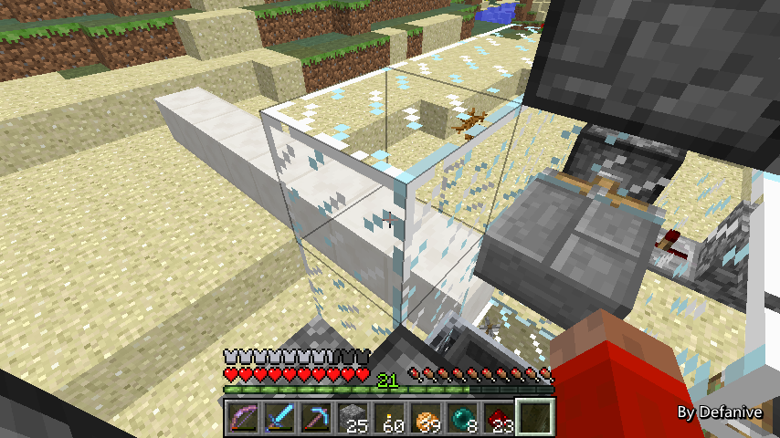
28842楼
2014-06-13 00:34
defanive2
无尽黑夜
14
收获！
——来自 MCLive
28843楼
2014-06-13 00:34
defanive2
无尽黑夜
14
接下来只需要做一个巨型的储存系统即可！
——来自 MCLive
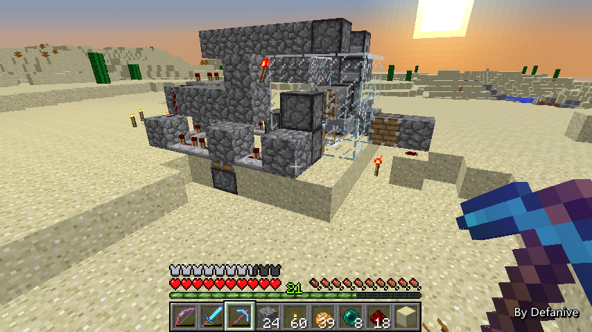
28845楼
2014-06-13 00:36
defanive2
无尽黑夜
14
首先从出口转向之后上推做成一个平面
接下来会把平面平推做成一个立方体
——来自 MCLive
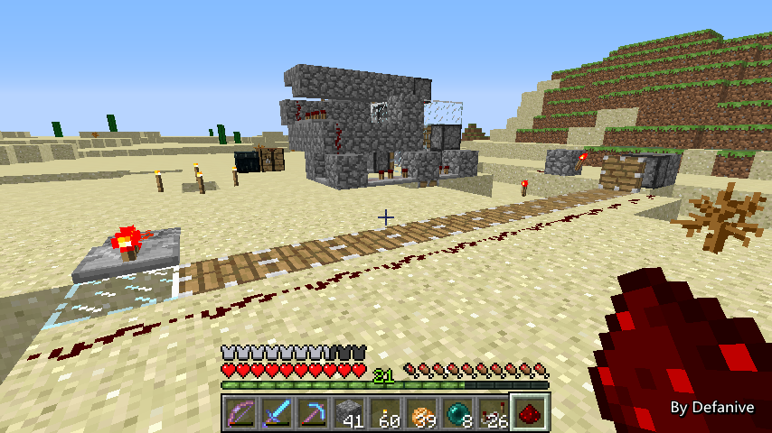
28847楼
2014-06-13 00:43
defanive2
无尽黑夜
14
储存系统做好啦！
生存里做东西真是费时。。
——来自 MCLive
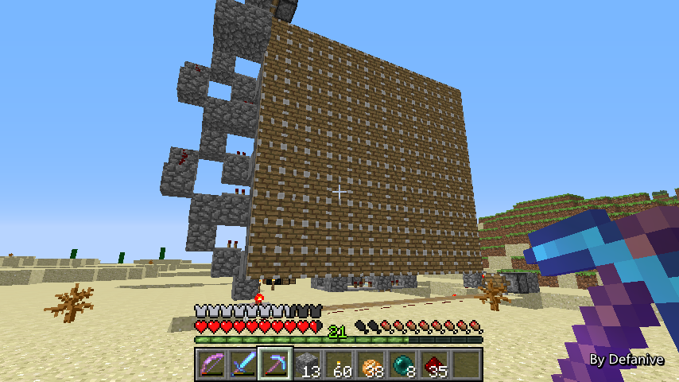
28848楼
2014-06-13 01:00
defanive2
无尽黑夜
14
一切都完成了，是批量转换的时候了！
——来自 MCLive
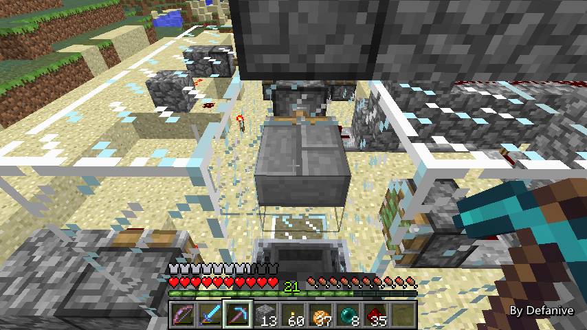
28849楼
2014-06-13 01:01
defanive2
无尽黑夜
14
收获了一大堆！
——来自 MCLive
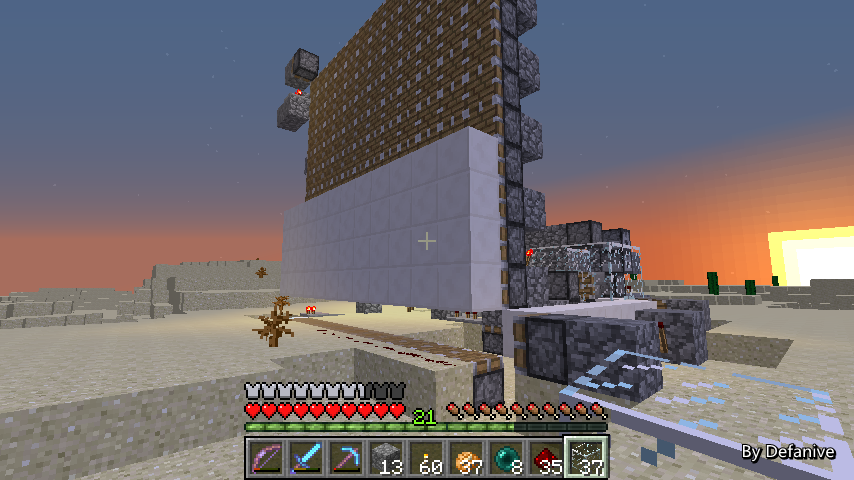
28850楼
2014-06-13 01:06
defanive2
无尽黑夜
14
已经完成了3组的转换了！
速度是1.8秒转换完一个，还算可以接受
不管怎么说今天的工程算是一个成功
以后建筑里可以随意使用石英了
大家下次再见吧！
PS 今天网络整天抽，发好久都发不上来
——来自 MCLive
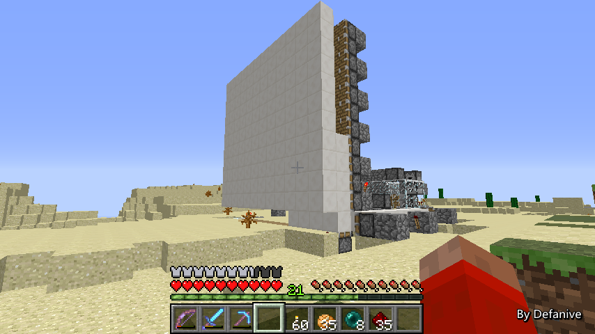
28852楼
2014-06-13 01:39
defanive2
无尽黑夜
14
现在困了，先去睡觉吧。。
Q&A下次直播的时候再来
28853楼
2014-06-13 01:49
defanive2
无尽黑夜
14
今天我们来继续打MC吧！
本来想昨晚直播的，但是做完的时候好像已经晚了
所以就今天补回昨晚的内容吧！
——来自 MCLive
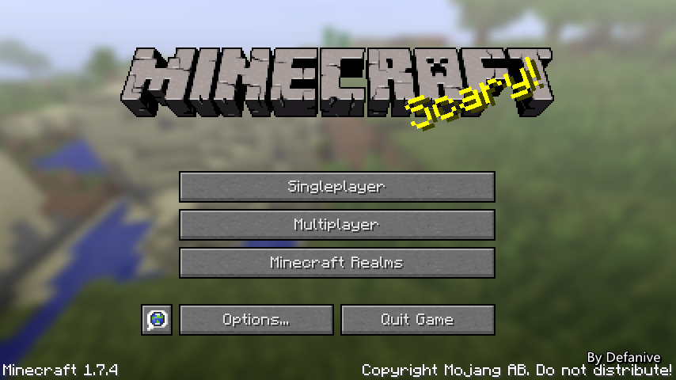
28914楼
2014-06-14 20:42
defanive2
无尽黑夜
14
首先先把上一次的转换机的具体结构给讲解了
当然啦，这个BUG貌似在178还是179修复了
所以说如果版本已经更新了的话就当作看热闹吧
PS 至于我的话是一直懒得更新179
最主要的原因就是我玩的一个小服还在174
而且179对比174也没什么新东西
于是就一直没更新了
——来自 MCLive
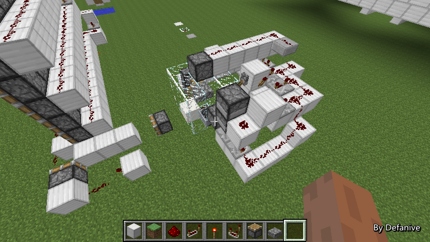
28921楼
2014-06-14 20:54
defanive2
无尽黑夜
14
首先是要在地下挖个坑，然后放上发射器和玻璃
接下来往玻璃里面射7只箭（要把附加值改为7）
完成之后就可以把发射器拆了
玻璃这一格将会是半砖被转换成石英半砖的地方
——来自 MCLive
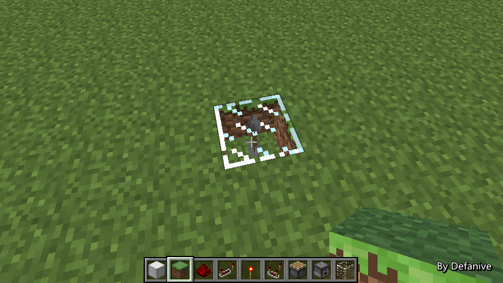
28926楼
2014-06-14 21:01
defanive2
无尽黑夜
14
接下来往斜后方2格用投掷器做出如图的结构
这样的结构是将半砖和金压力板发射给玩家
使得玩家可以一直按住右键放置方块
玩家会站在向上的投掷器上，鼠标指向玻璃方块
脚下的投掷器会发射金压力板
身后的2个投掷器会分别发射一个半砖
——来自 MCLive
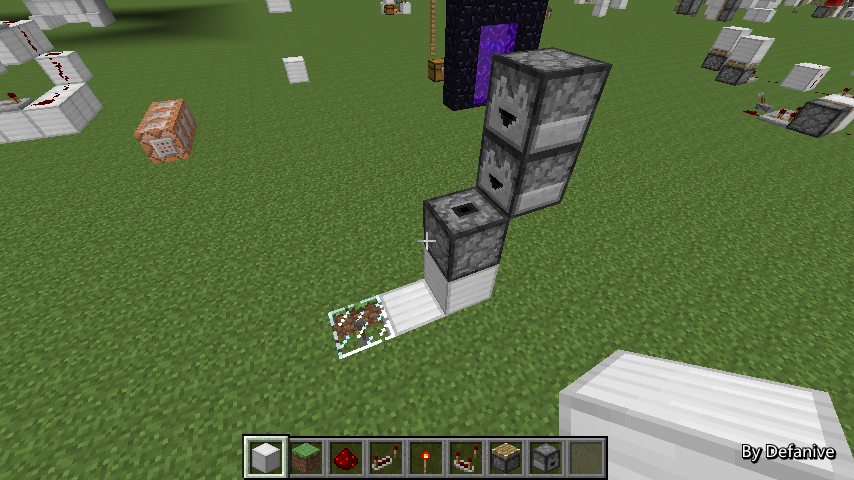
28929楼
2014-06-14 21:05
defanive2
无尽黑夜
14
接下来就是进行转换的电路部件
3个活塞都是粘性活塞
倒置的楼梯上方是发射器，用于发射箭
——来自 MCLive
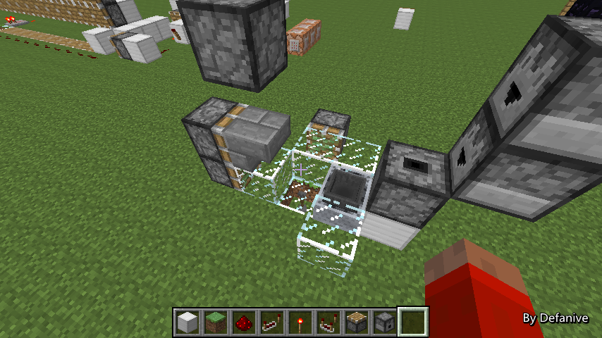
28933楼
2014-06-14 21:10
defanive2
无尽黑夜
14
上一张图发射器的位置错了 = =
默认情况下楼梯的活塞是伸出的
发射器在楼梯的正上方
——来自 MCLive
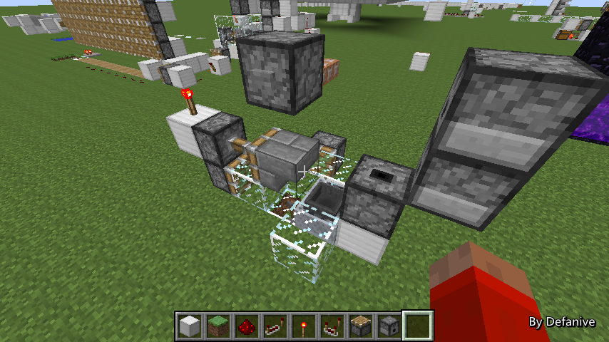
28934楼
2014-06-14 21:12
defanive2
无尽黑夜
14
首先发射器会被激活，射出一只箭
同时，后面的投掷器会给玩家发射2个半砖
玩家按住右键会把半砖放到转换位置
——来自 MCLive
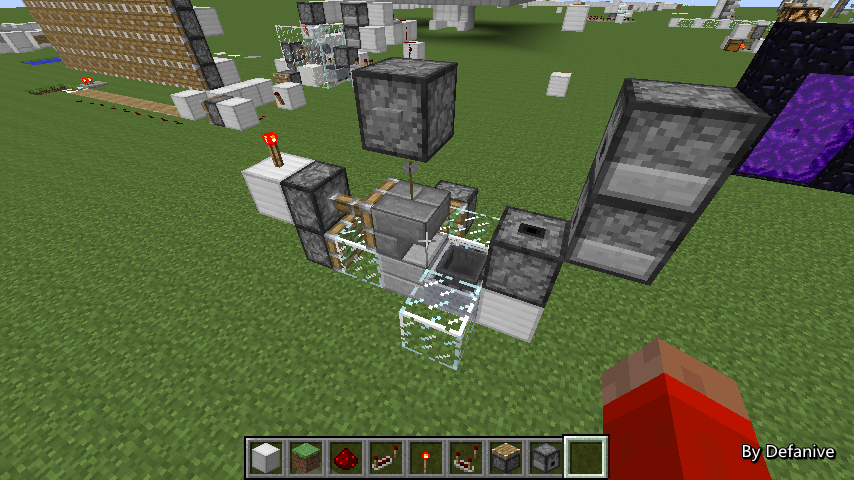
28936楼
2014-06-14 21:14
defanive2
无尽黑夜
14
接下来控制楼梯的活塞会收回
同时脚下的投掷器会给玩家发射一个金压力板
在收回的瞬间玩家把金压力板放在了半砖上面
箭就根据记忆的坐标认为自己击中的是金踏板
于是把半砖的附加值转换为7，也就是石英半砖
——来自 MCLive
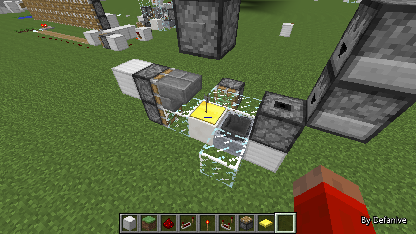
28938楼
2014-06-14 21:17
defanive2
无尽黑夜
14
接下来右侧的活塞迅速推出并收回
实现了把石英半砖的推出
并且石英半砖上的金压力板和箭都掉落了下来
——来自 MCLive
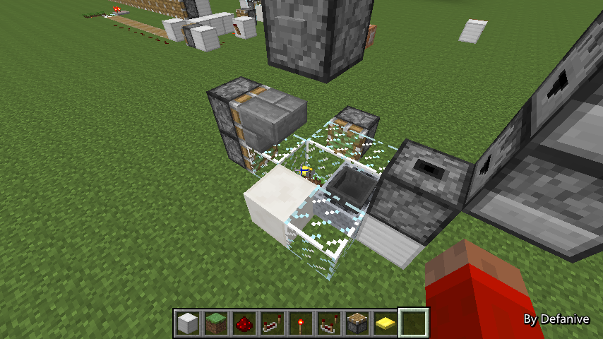
28939楼
2014-06-14 21:19
defanive2
无尽黑夜
14
接下来楼梯活塞下面的活塞迅速推出并收回
这样把箭和金压力板都推进了漏斗矿车里面
漏斗矿车会吸走金压力板
而箭则会卡在矿车这一格
PS 为什么要把箭推走呢
因为如果不推走的话玻璃这里就会有8只箭了
那么下一次转换的时候就会把附加值改成8而不是7
——来自 MCLive
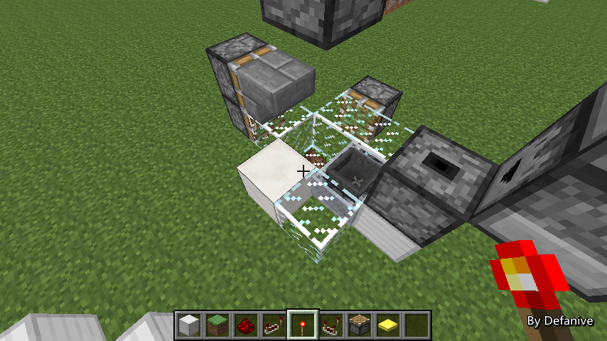
28940楼
2014-06-14 21:21
首页
上一页
287
288
289
290
291
292
292
293
294
295
296
297
下一页
末页